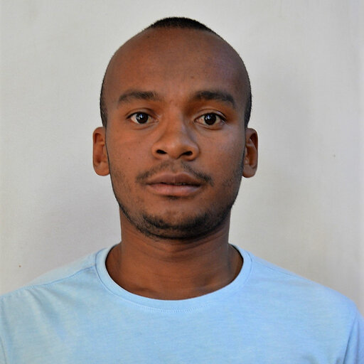

About

I am a PhD candidate in Mathematics at the Université de Fianarantsoa, Madagascar, specialising in algebraic combinatorics. My doctoral work is conducted under the joint supervision of François Bergeron (UQAM, Canada) and Benjamin Randrianirina (Université de Fianarantsoa).
My research sits at the intersection of symmetric function theory, combinatorial species, and representation theory of the symmetric group. A central theme of my current work is understanding the Kronecker product of symmetric functions through the lens of species-theoretic constructions.
My PhD is supported by the International Mathematical Union (IMU) through the Graduate Research Assistantship in Developing Countries (GRAID) programme.
IMU · GRAID ProgrammeResearch
Published · 2026
Species, Symmetric Functions and Kronecker Product
We study two new families of symmetric functions arising from a species-theoretic construction motivated by cycle structure. For each partition of n, we define two families of combinatorial molecules giving rise to bases of the homogeneous symmetric functions of degree n. We prove closure under the Kronecker product and generalise the classical Garsia–Remmel theorem to these new settings.
Master Thesis · 2023
Schur Expansion of the Cycle Index Series of Species
A study of the Schur-positive decomposition of cycle index series associated with combinatorial species, exploring the representation-theoretic underpinnings of species-generated symmetric functions.
Preprint
Class Order of the Cycle Partition (nm) in Sn ≀ Sm
An investigation of the class orders of specific cycle partitions in the wreath product Sn ≀ Sm, contributing to the combinatorial study of these groups.
Research Interests
Publications
Peer-Reviewed Article
Enumerative Combinatorics and Applications · ECA 6:3 (2026) #S2R19
Species, Symmetric Functions and Kronecker Product
Received: December 12, 2025 · Accepted: April 26, 2026 · Published: May 8, 2026 · DOI: 10.54550/ECA2026V6S3R19 · Released under CC BY-ND 4.0
Activities
-
Mathematics Stack Exchange
Active contributor to mathematical problem-solving and discussion.
-
HackerRank
Competitive programming and algorithmic problem-solving.
-
OEIS Contributions
Contributor to the Online Encyclopedia of Integer Sequences.
-
Learning Data Science: Data Wrangling, Exploration, Visualization, and Modeling with Python — Sam Lau, Joseph Gonzalez, Deborah Nolan (2023)
-
Hands-On Machine Learning with Scikit-Learn, Keras, and TensorFlow — Aurélien Géron (2022)
Projects
Applied mathematics and data science projects currently in development.
Finance
Mathematical modelling and quantitative analysis in financial systems.
In development
Healthcare
Data-driven approaches to healthcare modelling and analytics.
In development
Climate & Ecology
Statistical and combinatorial tools applied to climate change research.
In development
Business
Optimisation and decision-making models for business applications.
In development